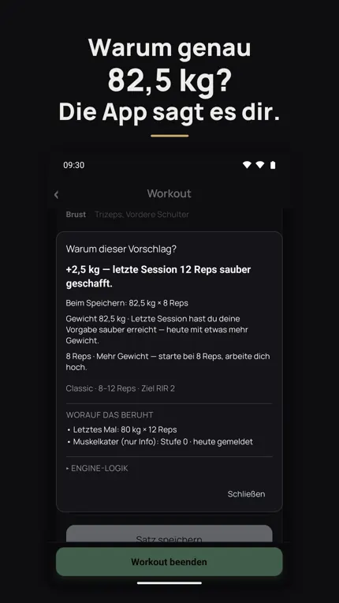
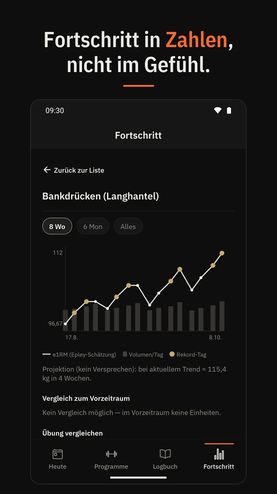
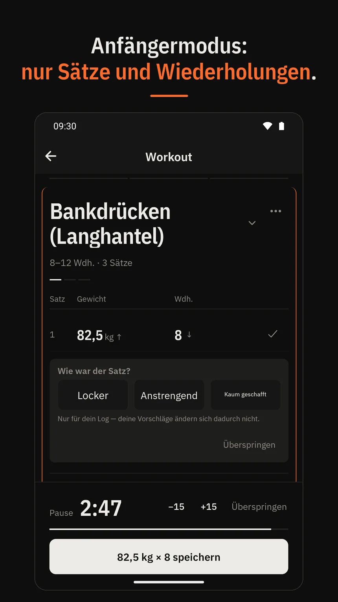

IronTally: das Trainingstagebuch, das dir sagt WARUM.
Jeder Gewichtsvorschlag kommt mit der Regel dahinter — statt Blackbox. Für Krafttraining und Hypertrophie.

Warum genau 82,5 kg? Die App sagt es dir.

Fortschritt in Zahlen, nicht im Gefühl.

Anfängermodus: ohne RIR.
-
Nachvollziehbar
Zu jedem Vorschlag gehört die Regel, auf der er beruht — nachlesbar, nicht geraten.
-
Ein Hinweis, kein Rauschen
Es steht immer nur ein Hinweis auf der Karte. Der Rest wartet, bis du ihn brauchst.
-
Auch ohne Vorwissen
Der Anfängermodus fragt „wie war der Satz?“ statt nach RIR. Umschaltbar, jederzeit.
Was ist IronTally?
IronTally ist ein Trainingstagebuch für Android. Du protokollierst damit Krafttraining Satz für Satz — Gewicht, Wiederholungen, RIR — und bekommst für die nächste Einheit einen Vorschlag. Der Unterschied: Zu jedem Vorschlag gehört ein antippbares Warum mit der Regel dahinter. Gedacht für alle, die im Kraftraum nach Plan trainieren und Hypertrophie selbst steuern wollen.
Wie kommt der Gewichtsvorschlag zustande?
Nicht aus einer Wertung, die du nicht sehen kannst. Die App rechnet mit den Sätzen, die du eingetragen hast, und mit einem Progressions-Modus, den du pro Übung selbst wählst. Vier stehen zur Auswahl, umschaltbar per Tap. Der Vorschlag steht grau im Eingabefeld: Du übernimmst ihn mit einem Tap oder schreibst drüber.
Classic
Doppelte Progression in ihrer einfachsten Form. Alle Sätze laufen mit demselben Gewicht in einer Wiederholungsspanne. Erst wenn alle Sätze das obere Ende der Spanne treffen, schlägt die App mehr Gewicht vor. RIR bleibt hier optional.
TopBackoff
Der Top-Satz gibt den Ton an: Du wählst das Gewicht, das heute beim Ziel-RIR in der Spanne liegt. Die Back-off-Sätze versuchen dann, die Wiederholungen des Top-Satzes zu treffen. Ein schlechter Tag zieht damit das ganze Workout mit nach unten, statt es zu sprengen.
Dynamic
Jeder Satz progressiert eigenständig. Trifft nur der erste Satz das obere Ende der Spanne, steigt auch nur der erste Satz. Über die Wochen zieht jeder Satz seine eigene Linie, die relative Intensität bleibt pro Satz gleich. RIR ist hier für jeden Satz Pflicht.
Redline
Bis ans Versagen. Die RIR-Erwartung zieht über die Sätze von 1 auf 0, und das Gewicht steigt, sobald die obere Spanne bei vollem Einsatz getroffen wird. Für erfahrene Lifter, die maximale Intensität ausdrücklich wollen.
Einen starren Prozentplan gibt es nicht. Grundlage sind die Sätze, die du wirklich geschafft hast, in TopBackoff, Dynamic und Redline zusätzlich das RIR. Eine Trainingspause rechnet die App nicht stillschweigend weg, sie benennt sie.
Für wen ist IronTally gedacht?
Für Fortgeschrittene, die progressive Überlastung selbst steuern wollen: Modus pro Übung, RIR pro Satz, Wochenvolumen pro Muskelgruppe mit Ziel-Korridor, dazu geschätztes 1RM und der Verlauf pro Übung.
Und für Anfänger, die erst einmal nur wissen müssen, welches Gewicht heute auf die Stange kommt. Der Anfängermodus lässt RIR weg. Du machst die vorgegebenen Sätze und Wiederholungen. Erreicht ein Satz das obere Ende seiner Spanne, schlägt die App beim nächsten Mal etwas mehr Gewicht vor. Wie sich der Satz angefühlt hat, kannst du antippen: locker, anstrengend oder kaum geschafft. Das landet nur im Protokoll. Wer später mehr Kontrolle will, schaltet um — die Daten bleiben dieselben.
Häufige Fragen
Läuft IronTally auf dem iPhone?
Nein. IronTally ist eine Android-App und wird über Google Play installiert. Eine iOS-Version gibt es nicht. Wenn du am iPhone trainierst, ist die App im Moment nichts für dich.
Muss ich RIR oder RPE kennen?
Nein. Im Anfängermodus fragt die App nicht nach RIR. Das Gewicht steigt, sobald ein Satz das obere Ende seiner Wiederholungsspanne erreicht. Wenn du willst, tippst du nach dem Satz an, wie er war; das wird nur protokolliert. RIR schaltest du erst dazu, wenn du es willst.
Was passiert nach einer Trainingspause?
Die Pause wird erkannt und benannt, nicht stillschweigend weggerechnet. Du siehst also, dass zwischen zwei Einheiten Zeit lag, und der Vorschlag sagt dir, warum er deshalb anders aussieht.
Woher stammen die Regeln hinter den Vorschlägen?
Drei Modi folgen bekannten Progressionsmodellen des Kraftsports: doppelte Progression, Top-Satz plus Back-off und dynamische doppelte Progression pro Satz. Dazu kommt Redline, ein eigener Modus bis ans Versagen. Welche Regel gerade greift und welche Sätze sie ausgelöst haben, steht im Warum zu jedem Vorschlag.
Kann ich eigene Pläne anlegen?
Ja. Fertige Programme für Push/Pull/Legs, Upper/Lower und Ganzkörper liegen bei, aber Programme, Übungen und Wiederholungsbereiche legst du auch selbst an. Der Katalog umfasst über 200 Übungen mit Muskelzuordnung, von Langhantel und Kabelzug bis Körpergewicht.
In welchen Sprachen gibt es IronTally?
Deutsch, Englisch und Polnisch. Die App startet in der Sprache deines Geräts, umstellen kannst du sie in den Einstellungen. Die Erklärungen im Warum-Sheet sind vollständig übersetzt, nicht nur die Menüs.
Was passiert mit meinen Trainingsdaten?
Sie gehören dir. Wenn du über mehrere Geräte synchronisierst, liegen sie DSGVO-konform in der EU. Keine Weitergabe an Dritte ohne deine Einwilligung, keine Auswertung für Werbung und keine Werbung im Trainings-Flow. Details stehen in der Datenschutzerklärung.
Zuletzt aktualisiert: 11. Oktober 2026
Einfach ausprobieren.
Trag deinen ersten Satz ein und sieh dir an, was die App daraus macht.
Bei Google Play laden